Demos / Animations / Interactions
Stuff I do for fun
Interactive WebGL demo SVG clipping experiment 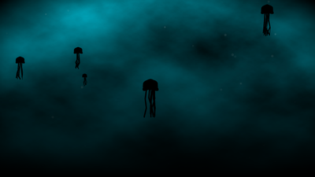 Animation loop (PIXI, GSAP) 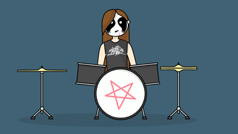 Interactive SVG animation 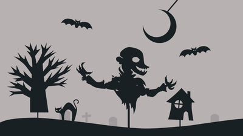 SVG demo (GSAP) #codevember 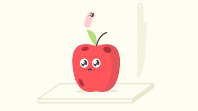 SVG animation loop (GSAP) SVG animation loop (GSAP) 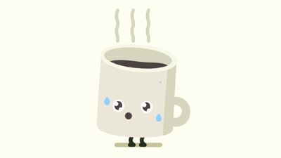 SVG animation loop (GSAP) Scroll based interaction Animation loop (SVG, WAAPI) Basic GSLS shader (WebGL) 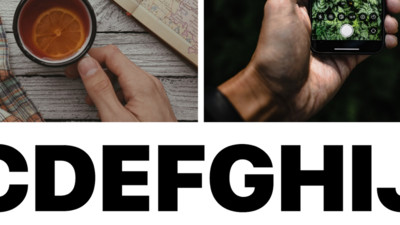 ScrollTrigger Demo (GSAP) 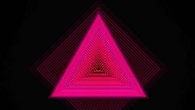 Web Audio Experiment (Canvas) 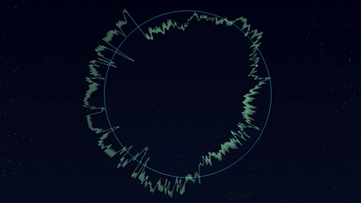 Web Audio Experiment (Canvas) 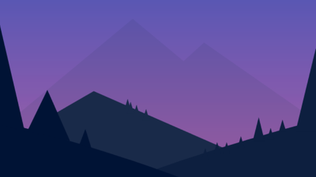 SVG animation using Snap.svg 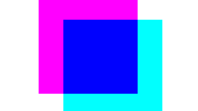 Simple canvas animation 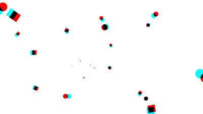 Animation loop (GSAP, PIXI) 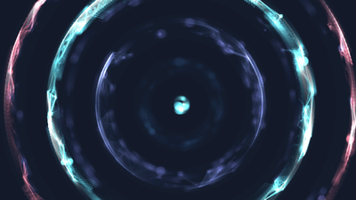 Canvas animation loop 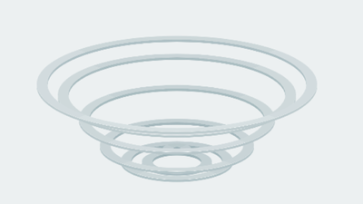 CSS 3D animation WebGL (Three.js) animation 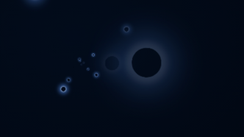 Random CSS animation 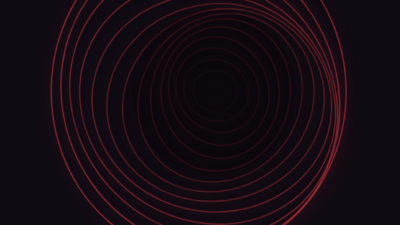 CSS animation SVG (SMIL) animation 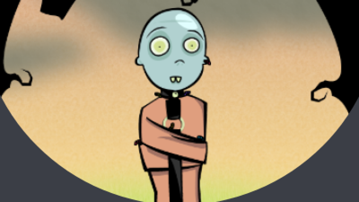 JS/CSS/SVG Interaction 
Interactive JS/CSS demo JS/CSS Interaction Configurable canvas animation 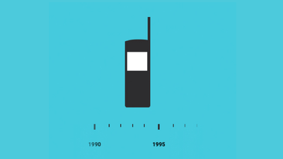 SVG morphing experiment
OSS / Libs / Tools
Some open-source contributions
- yacc
Yet another color converter tool
- colour-lovers-palettes
Discover random color palettes
- shadowlord
Tints and shades generator tool
- whatever-suffix
Random word-based-app
- values.js
Get tints and shades of a color
- gemini-scrollbar
Custom overlay-scrollbars
- psd-guides
Draw photoshop-like guides
- text-gradient
Text gradients with fallback support
- pisces
Smooth scrolling
- share-url
Generate social sharing urls
- pixelify-img
Pixelate DOM images
- mix-css-color
Mix two colors together in variable proportion
- parse-css-color
Parse CSS color strings
- react-gemini-scrollbar
gemini-scrollbar react wrapper
- metallum
CLI to get lyrics from metal-archives
- syringe.js
Inject CSS rules at runtime
- image-halt
Cancel the transfer of images
- character-shuffling
Shuffle DOM elements’ text contents
Projects
Some projects I have contributed to
- Platzi
Learn about design, web development, marketing, digital business, and more.
- PlaceIt
Make logos, videos, mockups, flyers, and more without any desing/programming knowledge.
- Open Collective
Make your community sustainable. Collect and spend money transparently.
- The Debt Collective
Organization working to transform individual financial struggles into a source of collective power.
- Majal.org
Ecosystem of platforms with two complementary goals: Freedom of Expression & Access to Information.
Crodvoice.by
Enabling activists & grassroots organizations to collaboratively curate media related to their causes.
Making of a Century
Educational app that showcases revolutionary leaders and movements in the past 100 years.
- Mideast Tunes
A web and mobile app showcasing underground musicians in the Middle East and North Africa who use music as a tool for social change.
- Ahwaa
Ahwaa is a safe place for the LGBTQ community of Middle East to provide help to one another with useful advice.